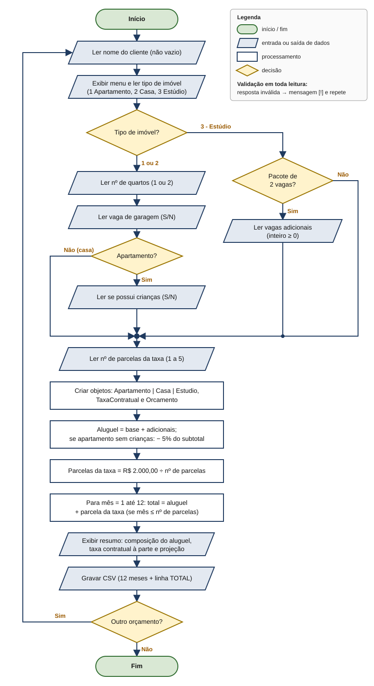

A R.M Imóveis aluga casas, apartamentos e estúdios. Hoje os orçamentos são calculados à mão pelos atendentes, o que deixa o atendimento lento e abre espaço para erros na hora de somar adicionais, aplicar descontos e explicar a taxa de contrato. O RentSmart resolve isso: o atendente informa as características da locação e o sistema aplica as regras sozinho, explica como chegou ao valor e gera a projeção do primeiro ano em uma planilha (CSV).
Lendo o enunciado, as regras se dividem em três grupos: o aluguel-base de cada tipo de imóvel, os adicionais e descontos mensais, e a taxa contratual, que é um custo à parte e não pode ser confundida com o aluguel.
| Grupo | Regra do enunciado | Valor |
|---|---|---|
| Aluguel-base | Apartamento de 1 quarto | R$ 700,00 |
| Casa de 1 quarto | R$ 900,00 | |
| Estúdio | R$ 1.200,00 | |
| Adicionais mensais | Apartamento com 2 quartos | + R$ 200,00 |
| Casa com 2 quartos | + R$ 250,00 | |
| Vaga de garagem (casa ou apartamento) | + R$ 300,00 | |
| Estúdio: pacote inicial de 2 vagas | + R$ 250,00 | |
| Estúdio: cada vaga além do pacote | + R$ 60,00 | |
| Desconto | Apartamento, cliente sem crianças: sobre o aluguel após os adicionais | − 5% |
| Taxa contratual | Cobrada separadamente, em até 5 parcelas | R$ 2.000,00 |
Algumas situações não estão descritas no texto. Para não inventar regra, cada uma foi resolvida pela leitura mais literal possível do enunciado:
| Situação | Decisão adotada |
|---|---|
| Estúdio com 2 quartos ou com a vaga de R$ 300 | Não existe. O enunciado só fala em 2 quartos para casa e apartamento, e diz que para o estúdio "a regra de estacionamento será diferente". |
| Vagas adicionais do estúdio sem o pacote | Não é permitido: as vagas adicionais complementam o "pacote inicial". |
| O desconto de 5% inclui a garagem? | Sim. O desconto vem "após a aplicação dos adicionais correspondentes", e o 2º quarto e a garagem são os adicionais do apartamento. |
| Juros no parcelamento da taxa | Não há; o enunciado não menciona juros. |
| Divisão com centavos (ex.: 3x) | O centavo que sobra vai para as primeiras parcelas: 666,67 + 666,67 + 666,66 = 2.000,00. |
| Meses em que a taxa é cobrada | Parcela 1 no mês 1, parcela 2 no mês 2, e assim por diante. |
| Formato do CSV | Separador ";" e vírgula decimal, para abrir direto no Excel em português. |
| Etapa | Conteúdo |
|---|---|
| Entradas (digitadas pelo atendente) |
|
| Validação | Cada resposta é conferida antes de seguir. Se for inválida (opção que não existe,
texto onde se espera número, número fora da faixa, "talvez" numa pergunta de S/N), o sistema mostra uma
mensagem iniciada por [!] e repete a mesma pergunta. Além disso, as próprias classes recusam
valores inválidos (lançam ValueError), então nem por código é possível montar um imóvel errado. |
| Processamento |
|
| Saídas |
|
O fluxograma mostra a ordem em que o programa pergunta, decide e calcula. As perguntas mudam conforme o tipo de imóvel: casa e apartamento perguntam quartos e garagem; só o apartamento pergunta sobre crianças; o estúdio pergunta apenas sobre estacionamento.

A solução foi dividida em classes que representam as coisas do negócio (imóvel, taxa, orçamento) e classes que cuidam da comunicação (terminal e arquivo CSV). A hierarquia dos imóveis é:
Imovel (abstrata) → cálculo comum: base + adicionais − descontos ├── ImovelComQuartos (abstrata) → regra comum de 2º quarto e garagem (R$ 300) │ ├── Apartamento → base 700, 2º quarto 200, desconto de 5% sem crianças │ └── Casa → base 900, 2º quarto 250 └── Estudio → base 1.200, pacote de 2 vagas 250, vaga extra 60 Orcamento ── tem um ──▶ Imovel e ── tem uma ──▶ TaxaContratual InterfaceConsole ── cria ──▶ Orcamento ExportadorCSV ── lê ──▶ Orcamento
| Classe | Principais atributos | Principais métodos |
|---|---|---|
Imovelabstrata |
NOME, ALUGUEL_BASE |
descricao() e _calcular_adicionais() (abstratos); _calcular_descontos(subtotal);
composicao() (todas as linhas do aluguel); subtotal(); valor_mensal() |
ImovelComQuartosabstrata |
_quartos (1 ou 2), _garagem (bool), ADICIONAL_SEGUNDO_QUARTO, ADICIONAL_GARAGEM = 300 |
properties quartos e garagem com validação; _calcular_adicionais() |
Apartamento |
ALUGUEL_BASE = 700, ADICIONAL_SEGUNDO_QUARTO = 200, _possui_criancas, PERCENTUAL_DESCONTO_SEM_CRIANCAS = 5% |
sobrescreve _calcular_descontos() e descricao() |
Casa |
ALUGUEL_BASE = 900, ADICIONAL_SEGUNDO_QUARTO = 250 |
herda tudo de ImovelComQuartos |
Estudio |
ALUGUEL_BASE = 1.200, _pacote_estacionamento, _vagas_adicionais, VALOR_PACOTE_ESTACIONAMENTO = 250, VALOR_VAGA_ADICIONAL = 60 |
properties com validação; total_vagas; _calcular_adicionais(); descricao() |
ItemOrcamento |
descricao, valor (negativo = desconto) |
— (registro imutável de uma linha da composição) |
TaxaContratual |
VALOR_TOTAL = 2.000, MAXIMO_PARCELAS = 5, _parcelas |
valores_das_parcelas(), parcela_do_mes(mes), descricao() |
Orcamento |
_cliente, _imovel, _taxa, MESES_PROJECAO = 12 |
aluguel_mensal, projecao_12_meses(), total_aluguel_no_ano(), total_no_ano(), resumo() |
LinhaProjecao |
mes, aluguel, parcela_taxa, numero_parcela, total_mes, total_acumulado |
— (registro imutável de um mês) |
ExportadorCSV |
pasta_saida, CABECALHO, SEPARADOR = ";" |
nome_arquivo(orcamento), exportar(orcamento) |
InterfaceConsole |
_entrada (input), _saida (print), _exportador |
ler_texto(), ler_opcao(), ler_sim_nao(), ler_inteiro(), coletar_orcamento(), executar() |
Os valores em dinheiro usam Decimal em vez de float, porque float não guarda
centavos com exatidão. O arquivo dinheiro.py concentra o arredondamento e a formatação em reais.
ImovelComQuartos. Todas as perguntas de
resposta fechada seguem o mesmo padrão "pergunta → valida → repete se errado", que virou os métodos
ler_opcao, ler_sim_nao e ler_inteiro._quartos, _parcelas...) e só
mudam por properties que validam. Uma casa com 3 quartos ou uma taxa em 6 vezes simplesmente não
pode ser criada.valor_mensal) foi escrito uma vez só, em Imovel.
A regra do 2º quarto e da garagem também, em ImovelComQuartos. Casa só declara os
seus valores.valor_mensal() dá resultados diferentes para cada tipo
de imóvel, porque cada classe responde do seu jeito a _calcular_adicionais() e
_calcular_descontos(). Só o Apartamento tem desconto.Imovel; se um valor mudar, ele está em um único lugar (constante da classe).O projeto tem 44 testes automatizados (biblioteca unittest, que já vem com o Python), todos
passando. Eles conferem cada regra de valor, os limites das validações (0 ou 3 quartos, 6 parcelas, vagas
negativas), a divisão da taxa em 1 a 5 parcelas, o conteúdo do CSV e a interface com respostas simuladas,
inclusive respostas inválidas.
Além disso, o programa foi executado de verdade nos cenários abaixo. Os valores são os que o próprio
programa mostrou (a saída completa de cada execução está na pasta evidencias/ do repositório):
| Cenário | Composição | Aluguel mensal | Taxa | Total no 1º ano |
|---|---|---|---|---|
| Apartamento, 2 quartos, garagem, sem crianças | 700 + 200 + 300 = 1.200 − 5% (60) | R$ 1.140,00 | 5x de 400,00 | R$ 15.680,00 |
| Casa, 2 quartos, garagem | 900 + 250 + 300 | R$ 1.450,00 | 3x (666,67 + 666,67 + 666,66) | R$ 19.400,00 |
| Estúdio, pacote + 3 vagas extras | 1.200 + 250 + 3 × 60 | R$ 1.630,00 | à vista | R$ 21.560,00 |
| Apartamento, 1 quarto, com crianças (com 9 respostas inválidas recusadas) | 700 | R$ 700,00 | 2x de 1.000,00 | R$ 10.400,00 |
| Casa, 1 quarto, sem garagem | 900 | R$ 900,00 | à vista | R$ 12.800,00 |
| Estúdio sem estacionamento | 1.200 | R$ 1.200,00 | 4x de 500,00 | R$ 16.400,00 |
Trecho do CSV gerado no cenário da casa (separador ";"):
Mes;Aluguel mensal (R$);Parcela da taxa contratual (R$);Parcela n.;Total do mes (R$);Total acumulado (R$) 1;1450,00;666,67;1/3;2116,67;2116,67 2;1450,00;666,67;2/3;2116,67;4233,34 3;1450,00;666,66;3/3;2116,66;6350,00 4;1450,00;0,00;-;1450,00;7800,00 ... 12;1450,00;0,00;-;1450,00;19400,00 TOTAL;17400,00;2000,00;;19400,00;
abc, dataclasses, decimal, csv, unittest.Repositório do projeto: colar aqui o link do GitHub